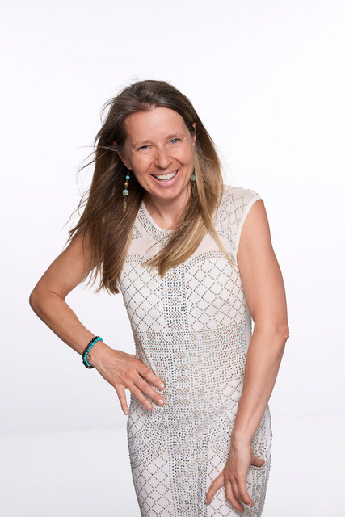
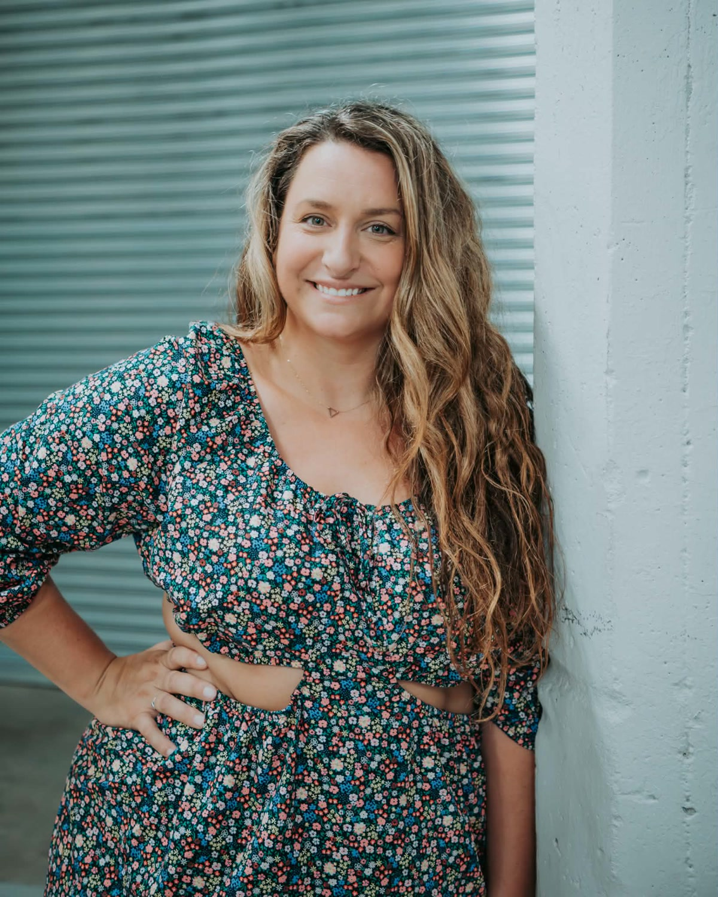

Ambassadeurs
Deux ambassadrices portent la mission de la fondation dans leur milieu.
-

Caroline Cazes
Ambassadrice
Je suis enthousiaste de m’impliquer auprès de la Fondation Honorer Aimer, parce que je crois que le deuil mérite d’être accompagné dans toute sa dimension humaine : corps, cœur et esprit. J’ai envie de contribuer à créer un mouvement où l’on s’accorde le temps d’accueillir les vagues de la vie, de prendre soin de soi et surtout de ne pas vivre ce moment seul, pour continuer à surfer la vie en santé.
-

Marion Vallerand
Ambassadrice
Je m’appelle Marion Vallerand, j’ai 35 ans, je suis maman de deux cocos de 6 et 10 ans. Je suis entrepreneure. Je suis passionnée par les voyages, les plantes, les animaux et la nature. Ces passions m’ont surtout été transmise par mon père qui est notamment décédé subitement à 58 ans d’un infarctus. Il est décédé alors que ma plus jeune avait 6 mois et qu’on venait de commencer la pandémie de COVID-19. Je me suis sentie vraiment dépassé lors de sa mort et bien souvent je me sentais seule avec ce sujet très pesant. La mort de mon père m’a obligé à faire beaucoup de travail de développement personnel et à trouver des outils par moi-même. C’est pour cette raison que la cause me tient particulièrement à cœur. Je trouve cela vraiment pertinent d’avoir une ressource autour du deuil pour amener plusieurs personnes à vivre plus doucement d’énormes pertes dans leur vie.